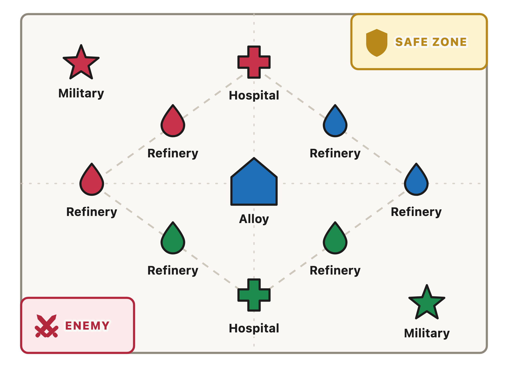
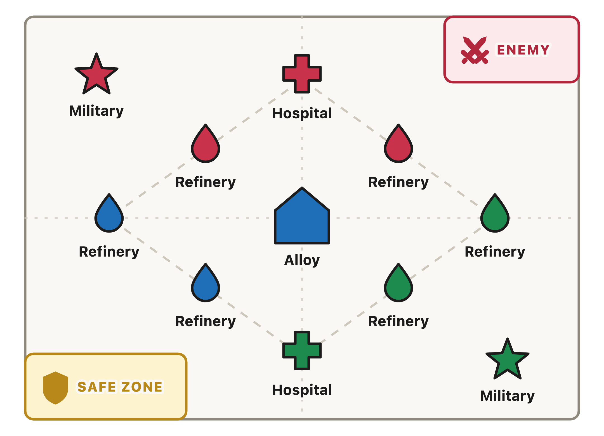

The battlefield spawns in two orientations. Check which one you are in before you move. Blue always takes the Refineries beside our Safe Zone — Red and Green shift to cover the rest.


Long-press or right-click a map to copy or save it.
BGB runs two timeslots each week, and we can field 60 players across them — Team A and Team B, thirty each. AoR has closer to a hundred members. The roster is the scarce thing.
Select Ready for every time you can attend. Select Decline for every time you cannot.
If you answer neither timeslot, you will not be selected.
Being a Starter is a benefit and a responsibility.
You sit out the next BGB.
Missing the battle scores zero, so marking Ready and not showing up falls under this rule too.
If you are not scoring 100k, we should be giving that opportunity to someone else. This does not apply to Substitutes.
Claiming a slot you do not use costs the other twenty-nine people on your team.
Substitutes need to be online and ready to sub in from the moment BGB begins.
With 10 minutes left, leaders will start asking players to step out so Substitutes can come in.
In a close match we may use judgement and leave the strongest players in longer — but we will try to bring Substitutes in before the last 5 minutes so they still get their points.
Teams are sorted by BGB score.
Show where to find a player's BGB score in game.
Who runs the selection, at what point in the two-day window, and where the finished rosters get posted so players know before the battle starts.
How the thirty on each team are split across the three groups, and whether a player keeps the same group from week to week.
How attendance and scores are recorded after each battle, and where a player can see the number they were measured against.